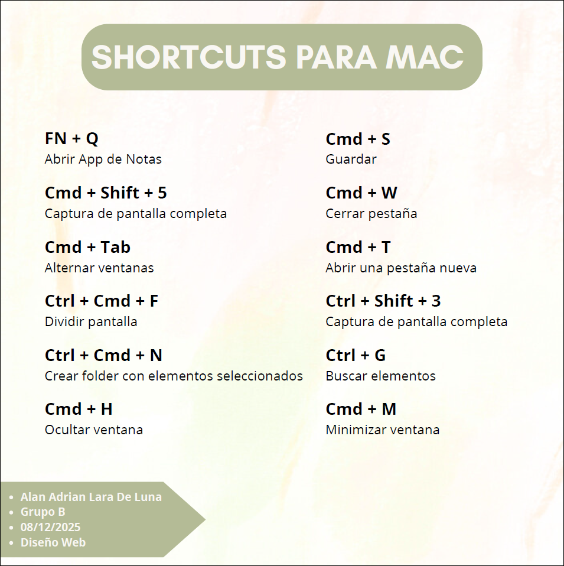

● CONCEPTOS ●
En esta actividad investigamos los conceptos de Hipertexto, prototipado y UX, y los aplicamos a un tema que nos gustara, en mi caso lo relacione con el videojuego Elden Ring.
✧ BITACORA - DISEÑO WEB ✧

En esta actividad investigamos los conceptos de Hipertexto, prototipado y UX, y los aplicamos a un tema que nos gustara, en mi caso lo relacione con el videojuego Elden Ring.
En equipo revisamos y recopilamos diversos comandos para hacernos la vida mas fácil al momento de programar y movernos en una MAC.
Aprendimos a utilizar la plataforma online "FIGMA" para aprender a diseñar y conceptualizar paginas web u otras cosas, en este caso nuestra tarea fue replicar el diseño de una pagina web.
Desglosamos una actividad cotidiana en un diagrama de flujo para aprender como debemos especificar cada paso y acción al momento de realizar una pagina web, en mi caso la hice de los contenidos de mi mochila.

Nuestra primera practica realizando una pagina web utilizando html, aprendimos a utilizar los elementos basicos como añadir un header, un titulo, parrafos, imagenes, fuentes, etc.

Diagrama que realizamos en equipo con el proposito de desglosar completamente los pasos a realizar para utilizar una aplicación de celular, en nuestro caso lo hicimos de la aplicación de Instagram.
En este diagrama que realizamos en equipo plasmamos diveros aspectos visuales y funcionales de una pagina web que en nuestra opinion necesitaban una revisión o un cambio para mejorar la experiencia, la realizamos sobre la pagina web de OXXO.
PAGINA DE OXXOEn equipos realizamos una portada de revista que abarcara los temas vistos en la conferencia FORO IA de la UACJ y los antecedentes de la multimedia.

En este diagrama se presentan de una manera desglozada los pasos por los cuales debes pasar para navegar por esta pagina web.
Tuvimos como tarea realizar un logotipo hecho con nuestras propias manos y el reto fue compararlo con un logotipo realizado por la IA para observar la diferencia que hay entre las dos propuestas.
El pasado 20 de Agosto, en el gimnasio universitario de la UACJ, se dio a cabo la conferencia "FORO UACJ: IA" en donde diversos profesores daban platicas y exponian el como el uso de la inteligencia artificial nos presenta un gran número de ventajas y el como debemos darle la bienvenida con los brazos abiertos y no rechazarla ni tenerle miedo.
Esta conferencia generó una gran cantidad de incomformidad en los estudiantes debido a que se promocionaba demasiado su utilización en procesos creativos y mas que como una herramienta la trataban como un reemplazo, lo cual termina siendo de mal gusto siendo que justo los alumnos que asistieron a la conferencia son los que estan intentando luchar contra este tipo de practicas y el uso maldebido de la IA en nuestros sectores de estudio y trabajo.
Tuvimos la tarea de realizar un boceto a mano de como reimaginariamos el layout de la pagina oficial de la UACJ, haciendo que toda esta cupiera en una sola pagina.
Convertimos el boceto a lapiz en un boceto fino hecho digitalmente en figma.

Desglosamos visualmente el wireframe, indicando que menus se abririan al clickear en ciertas opciones y que partes pueden moverse ya sea horizontalmente o verticalmente, esto para tener una idea completa de como va a funcionar la pagina antes de codificarla.
STATIC → Es la posición por defecto. El elemento se coloca según el flujo normal del documento y no se ve afectado por propiedades de posición como top, left, right o bottom.
FIXED → El elemento se mantiene fijo en la pantalla aunque el usuario haga scroll. Se posiciona respecto al viewport (la ventana del navegador) y no se mueve.
STICKY → El elemento se comporta de forma normal hasta que se alcanza un punto definido por top, left, etc., y entonces “se pega” en esa posición mientras se hace scroll.
El z-index es una propiedad que controla el orden de apilamiento de elementos que se superponen en una página web, determinando qué elementos aparecen más cerca o más lejos del usuario en el eje Z.
En este tema observamos el como organizar elementos en filas horizontalmente, y junto a ello tambien aprendimos a codificar tablas al estilo excel.
Tuvimos la tarea de diseñar un logotipo que nos representara utilizando una reticula para mantener proporciones y aspecto.
El logo personal que realizamos fue utilizado como un "favicon", este es el icono que aparece en la parte superior de tu navegador, en la pestaña del sitio justo al lado del nombre, este archivo debe de ser 32px x 32px.